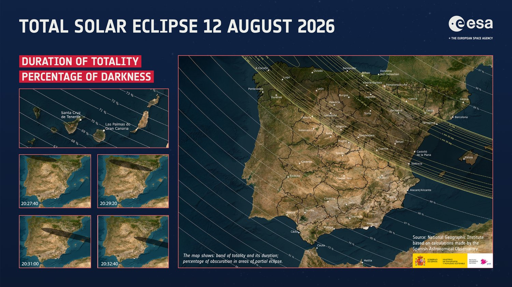

The path across Spain
ESA's official map of where the band of totality falls, with the local timing and the share of the Sun covered. It follows the year you pick above.

Source: ESA / Spanish National Geographic Institute. Click the map to open it full size.
An hour before sunset the shadow sweeps the green north and the dry interior. Totality is brief, under two minutes, and the Sun hangs low, so an open western horizon decides everything.
The catch
The parts of Spain that stay pleasant in August, the green Atlantic north, are also the most likely to be under cloud when the Sun goes out. The places with reliably clear skies are either furnace-hot inland or packed solid on the coast. Pick two of cool, clear and quiet; you will not get all three.
The relief
You get a second, easier shot next summer. The 2027 eclipse over the south is longer, higher and almost always cloudless, so there is no need to gamble everything on 2026. Choose the region that makes the best holiday and take totality as the prize if the weather plays along.
This is the easy one. Mid-morning, the Sun well clear of the horizon, totality past two and a half minutes, and a famously dry Andalusian sky. The price is heat, but the eclipse falls before the day turns cruel.
Why it is the better eclipse
Totality runs close to three minutes in Cádiz, against barely a minute and three-quarters anywhere in 2026. The Sun sits high, so no ridge or sea-haze can rob you of it, and an Andalusian August is about as near to a guaranteed clear sky as Europe offers.
The catch
Inland Andalusia can push past 35°C in the afternoon. But the eclipse comes around quarter to eleven in the morning, well before the worst of it, and the Atlantic coast stays a few degrees kinder. Watch in the morning, hide in the shade after lunch, come alive again at dusk.
Compare every region
Every region side by side. Click a row to open its full guide. Cool and cloudy sits at the top, hot and clear at the bottom. Flight and stay figures are live August 2026 prices for the 2026 regions.
| Region | When | Totality | Aug cloud | Aug temp | Crowds | Flight rt/pers | Stay · 4ad/6n | Cost |
|---|
Flight = cheapest return per person from Amsterdam (11–17 Aug 2026); Stay = lowest of three picked hotels, total for 4 adults / 6 nights. *Asturias is mostly 1-stop on these dates. Totality for Valencia and Madrid is at the nearest spot you drive to — Valencia city catches barely a minute on the path edge, and Madrid city sees only a 99% partial, so both mean a drive on the day.
Before you go: eclipse-day essentials
A few things that apply wherever you end up, and matter more than the destination.
Protect your eyes
Watch the partial phases only through ISO 12312-2 certified eclipse glasses (or a solar filter on a camera or binoculars). Ordinary sunglasses are not safe. The one exception: during totality itself, when the Sun is fully covered, you take the glasses off and look with the naked eye. That is the whole point.
99% is not 100%
A partial eclipse, even at 99%, stays bright and underwhelming. Totality is a different event entirely: the corona appears, the horizon glows like sunset in every direction, planets and stars come out. This is why being inside the path, not near it, is non-negotiable.
Have a weather plan
Cloud is the only real enemy, especially up north in 2026. Check the forecast from about five days out and be willing to drive to clearer sky. Useful sources: meteoblue, the Spanish service AEMET, and timeanddate for exact local timings.
Arrive early, clear the horizon
In 2026 the Sun is just a few degrees up, so scout your spot in daylight and make sure nothing, no ridge, building or tree, blocks the western view. Popular coastal viewpoints fill hours ahead, so get there early and bring water, especially inland.
A word from a local
A colleague in Barcelona, who knows the country well, weighed in on where to go.
Yep, the islands are normally very crowded during August, but with the eclipse it is probably going to be crowded and very expensive. Avoid the ‘full brown’ areas on the heat map, or just do activities early in the morning or in the evening.
I would say Asturias is very beautiful. You can do lots of activities in nature and the weather is normally colder. Galicia and Cantabria are the same, but the eclipse lasts less. One important tip for Galicia, Asturias and Cantabria: clouds are frequent.
Myself, I am going to Castellón, but just because it is close and some friends have a house there.
I am talking about provinces and autonomous communities, not cities, so there should be options. And there is another total eclipse next year in the south, if you miss the chance this year.
Once you find a place, check exactly where you need to go to see it, because there might be mountains that hide the view. And if you go close to the totality zone but not in it, expect a huge traffic jam if it is near a big city like Barcelona or Madrid.
— A colleague in Barcelona